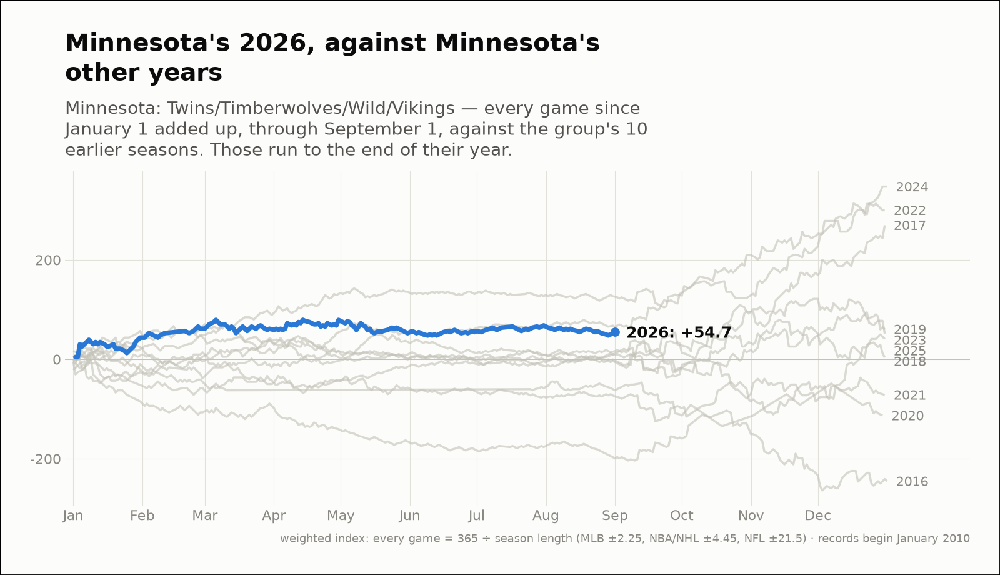
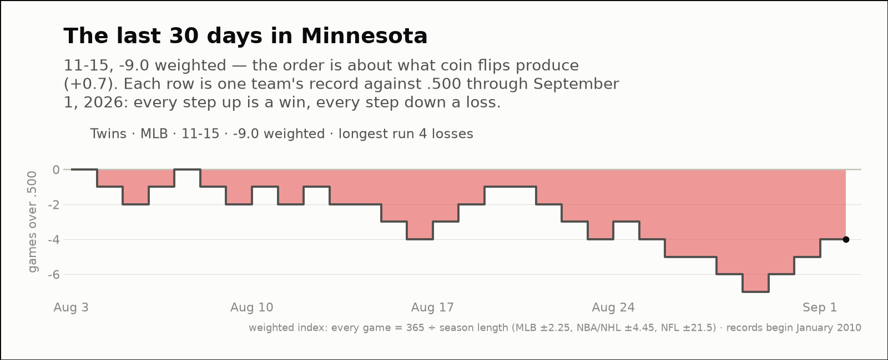

City of the day — Minnesota
Minnesota: Twins/Timberwolves/Wild/Vikings
- 2026 so far
- 129-123, +54.7 weighted over 252 games; longest run 8 straight wins
- Order of results
- about as clumped as coin flips (-0.3)
- Earlier seasons (full-year weighted)
- 2016 -245.2, 2017 +269.8, 2018 +3.5, 2019 +60.2, 2020 -113.1, 2021 -71.7, 2022 +299.9, 2023 +51.6, 2024 +347.5, 2025 +41.0
- Last 30 days
- 11-15, -9.0 weighted; longest run 4 straight losses
- Window opens
- August 4, 2026
| Team | Last 30 days | Weighted | Longest run |
|---|---|---|---|
| Twins | 11-15 | -9.0 | 4 straight losses |

